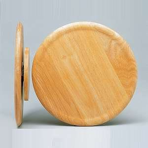

Bullet Time Effect without Post-Production
Article by Tryxx alias the.b!
Want to create a Bullet Time effect and don't want to spend much time on post-production? Two different methods to achieve that are explained here.
Introduction
What does "bullet time" mean? In short, bullet time means that the camera moves around an object slowed down or even frozen in time. (For further information, read the Wikipedia article or use google).
First: Rotating Set
Put your props on a rotatable surface. Some people have rotatable board like this:
If you dont have such a thing, build one yourself from LEGO:


Now that your props are on a rotatable board, you can start to animate. Turn the board a bit further each frame, and remaining on whether you want to have the objects/minifigs frozen in time or want them to keep moving while the camera pans around them, animate them or not.
One possible disadvantage of this technique is that the shadows move as you move the rotating board, because the lamps don't.
Second: Pivoting Camera
For this you'll need LEGO tracks:

Now use them to build a circle around your set, like this:

Your camera needs to be carried around the set. Build vehicle for that, like this:

or this:

Move the camera a bit further each frame, and, just like with the first method, remaining on whether you want to have the objects/minifigs frozen in time or want them to keep moving while the camera pans around them, animate them or not. Using tracks and a vehicle to carry the camera works fine for panning shots, as well. If you want to make a bullet time shot with flying objects and other visual effects, you can of course use other techniques, such as masking, in addition.